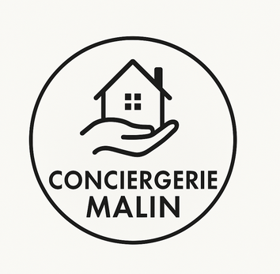

<!DOCTYPE html>
<html lang="fr">
<head>
    <meta charset="UTF-8">
    <meta name="viewport" content="width=device-width, initial-scale=1.0">
    <meta name="description" content="Services de conciergerie Airbnb en Val d'Oise (95) : gestion complète, ménage professionnel, check-in/out, photos, optimisation annonces à Cergy, Argenteuil, Enghien-les-Bains. Service 24/7.">
    <title>Nos Services de Conciergerie Airbnb - Val d'Oise (95) | Conciergerie Malin</title>
    <link rel="stylesheet" href="css/style.css">
    <link rel="stylesheet" href="css/services.css">
    <link href="https://fonts.googleapis.com/css2?family=Montserrat:wght@100;400;500;600;700&display=swap"
    rel="stylesheet">
    <script src="https://kit.fontawesome.com/0b1ec6b880.js" crossorigin="anonymous"></script>
</head>
<body>
    
</body>
</html>
<header>
    <a href="index.html" class="logo-container">
        
    </a>
    <div class="menu-toggle" id="menuToggle">
        <span></span>
        <span></span>
        <span></span>
    </div>
    <nav class="hd-links mont" id="navMenu">
        <a href="index.html">Accueil</a>
        <a href="services.html">Services</a>
        <a href="avis-clients.html">Avis Clients</a>
        <a href="faq.html">FAQ</a>
        <a href="contact.html">Contact</a>
    </nav>
</header>
<script src="js/menu.js"></script>
<!-- Page Services optimisée pour le référencement local -->
<section class="services-page">
    <div class="container">
        <div class="services-header">
            <h1>Nos services de conciergerie en <span class="city-name">Val d'Oise (95)</span></h1>
            <p class="services-intro">Découvrez tous les services de conciergerie Airbnb et gestion locative saisonnière que nous proposons dans le Val d'Oise. Notre équipe locale d'experts intervient 24h/24 et 7j/7 à Cergy, Argenteuil, Enghien-les-Bains, Montmorency, Deuil-la-Barre et dans tout le département 95.</p>
        </div>
        
        <!-- Featured Service -->
        <div class="featured-service">
            <div class="featured-content">
                <h2>Notre service principal : Gestion locative Airbnb Val d'Oise</h2>
                <p class="featured-description">Notre service de gestion locative Airbnb dans le Val-d’Oise s’appuie sur une organisation
soignée et un accompagnement attentif pour garantir une expérience fiable aux
propriétaires comme aux voyageurs. d'Oise est reconnu pour sa qualité et son efficacité. Nous intervenons dans toutes les villes du département, notamment à Cergy, Argenteuil, Enghien-les-Bains, Montmorency et Deuil-la-Barre, pour vous offrir une gestion complète et optimisée de votre location saisonnière.</p>
                <ul class="featured-benefits">
                    <li><i class="fas fa-check-circle"></i> Service disponible 24h/24 et 7j/7 dans tout le Val d'Oise</li>
                    <li><i class="fas fa-check-circle"></i> Équipe locale connaissant parfaitement le marché du 95</li>
                    <li><i class="fas fa-check-circle"></i> Optimisation des revenus grâce à un revenue management dynamique</li>
                    <li><i class="fas fa-check-circle"></i> Gestion multi-plateformes (Airbnb, Booking, Abritel)</li>
                </ul>
                <div class="featured-cta">
                    <a href="contact.html" class="btn btn-primary">Demander un devis gratuit</a>
                    <a href="tel:+33610960149" class="btn btn-secondary"><i class="fas fa-phone"></i> 06 10 96 01 49</a>
                </div>
            </div>
            <div class="featured-image">
                
            </div>
        </div>
        
        <!-- Services Grid -->
        <div class="services-grid">
            <!-- Service Card 1 -->
            <div class="service-card">
                <div class="service-icon">
                    <i class="fas fa-home"></i>
                </div>
                <h3>Gestion locative Airbnb Val d'Oise</h3>
                <p>Gestion complète de votre location saisonnière dans le Val d'Oise : annonces optimisées, calendriers synchronisés, communication voyageurs, revenue management et suivi des réservations sur toutes les plateformes.</p>
                <ul class="service-features">
                    <li>Gestion multi-plateformes (Airbnb, Booking, Abritel)</li>
                    <li>Optimisation des tarifs et du taux d'occupation</li>
                    <li>Reporting mensuel détaillé</li>
                </ul>
                <div class="service-areas">
                    <span>Zones desservies :</span> Cergy, Argenteuil, Enghien-les-Bains, Montmorency, Deuil-la-Barre, tout le 95
                </div>
                <a href="contact.html" class="service-link">Demander un devis <i class="fas fa-arrow-right"></i></a>
            </div>

            <!-- Service Card 2 -->
            <div class="service-card">
                <div class="service-icon">
                    <i class="fas fa-broom"></i>
                </div>
                <h3>Ménage professionnel location saisonnière</h3>
                <p>Ménage professionnel complet entre chaque location dans le Val d'Oise. Nettoyage minutieux, changement du linge, contrôle qualité et réapprovisionnement des consommables pour des voyageurs toujours satisfaits.</p>
                <ul class="service-features">
                    <li>Intervention rapide entre deux locations</li>
                    <li>Contrôle qualité systématique</li>
                    <li>Fourniture du linge de maison</li>
                </ul>
                <div class="service-areas">
                    <span>Zones desservies :</span> Cergy, Argenteuil, Enghien-les-Bains, Montmorency
                </div>
                <a href="contact.html" class="service-link">Demander un devis <i class="fas fa-arrow-right"></i></a>
            </div>

            <!-- Service Card 3 -->
            <div class="service-card">
                <div class="service-icon">
                    <i class="fas fa-key"></i>
                </div>
                <h3>Check-in et check-out automatisés</h3>
                <p>Accueil personnalisé de vos voyageurs dans le Val d'Oise avec check-in/check-out automatisés, remise de clés sécurisée, livret d'accueil digital digital et assistance 24/7 pendant tout le séjour.</p>
                <ul class="service-features">
                    <li>Remise de clés sécurisée (boîte à clés connectée)</li>
                    <li>Livret d'accueil digital personnalisé</li>
                    <li>Assistance voyageurs 24/7</li>
                </ul>
                <div class="service-areas">
                    <span>Zones desservies :</span> Tout le Val d'Oise (95)
                </div>
                <a href="contact.html" class="service-link">Demander un devis <i class="fas fa-arrow-right"></i></a>
            </div>

            <!-- Service Card 4 -->
            <div class="service-card">
                <div class="service-icon">
                    <i class="fas fa-camera"></i>
                </div>
                <h3>Photos professionnelles location Airbnb</h3>
                <p>Reportage photo professionnel de votre bien en Val d'Oise pour maximiser l'attractivité de vos annonces. Photos valorisantes, retouches qualité et mise en scène soignée qui augmentent vos réservations.</p>
                <ul class="service-features">
                    <li>Photographe professionnel expérimenté</li>
                    <li>Mise en scène et home staging</li>
                    <li>Retouches et optimisation pour le web</li>
                </ul>
                <div class="service-areas">
                    <span>Zones desservies :</span> Cergy, Argenteuil, Enghien-les-Bains, Montmorency, Deuil-la-Barre, tout le 95
                </div>
                <a href="contact.html" class="service-link">Demander un devis <i class="fas fa-arrow-right"></i></a>
            </div>

            <!-- Service Card 5 -->
            <div class="service-card">
                <div class="service-icon">
                    <i class="fas fa-search"></i>
                </div>
                <h3>Optimisation annonces location saisonnière</h3>
                <p>Création et optimisation de vos annonces Airbnb dans le Val d'Oise : titres accrocheurs, descriptions SEO, mots-clés locaux, tarification dynamique pour maximiser votre visibilité et vos réservations.</p>
                <ul class="service-features">
                    <li>Titre et description optimisés SEO</li>
                    <li>Mise en avant des atouts locaux du 95</li>
                    <li>A/B testing pour améliorer le taux de conversion</li>
                </ul>
                <div class="service-areas">
                    <span>Zones desservies :</span> Val d'Oise (95) et Île-de-France
                </div>
                <a href="contact.html" class="service-link">Demander un devis <i class="fas fa-arrow-right"></i></a>
            </div>

            <!-- Service Card 6 -->
            <div class="service-card">
                <div class="service-icon">
                    <i class="fas fa-comments"></i>
                </div>
                <h3>Communication voyageurs et SAV</h3>
                <p>Gestion complète de la communication avec vos voyageurs dans le Val d'Oise : réponses rapides 24/7, informations pratiques, assistance pendant le séjour, résolution de problèmes et gestion des avis clients.</p>
                <ul class="service-features">
                    <li>Réponses rapides et fluides aux voyageurs</li>
                    <li>Service client 24h/24 et 7j/7</li>
                    <li>Gestion proactive des avis clients</li>
                </ul>
                <div class="service-areas">
                    <span>Zones desservies :</span> Tout le Val d'Oise (95)
                </div>
                <a href="contact.html" class="service-link">Demander un devis <i class="fas fa-arrow-right"></i></a>
            </div>

            <!-- Service Card 7 -->
            <div class="service-card">
                <div class="service-icon">
                    <i class="fas fa-concierge-bell"></i>
                </div>
                <h3>Conciergerie sur-mesure location courte durée</h3>
                <p>Service de conciergerie personnalisé pour vos locations courte durée dans le Val d'Oise. Choisissez uniquement les prestations dont vous avez besoin : ménage, accueil, gestion annonces, ou formule complète.</p>
                <ul class="service-features">
                    <li>Formules modulables et flexibles</li>
                    <li>Tarifs adaptés à vos besoins</li>
                    <li>Service évolutif selon la saison</li>
                </ul>
                <div class="service-areas">
                    <span>Zones desservies :</span> Cergy, Argenteuil, Enghien-les-Bains, Montmorency, Deuil-la-Barre, tout le 95
                </div>
                <a href="contact.html" class="service-link">Demander un devis <i class="fas fa-arrow-right"></i></a>
            </div>

            <!-- Service Card 8 -->
            <div class="service-card">
                <div class="service-icon">
                    <i class="fas fa-globe"></i>
                </div>
                <h3>Gestion multi-plateformes location saisonnière</h3>
                <p>Diffusion et synchronisation de votre annonce sur toutes les plateformes de location saisonnière dans le Val d'Oise : Airbnb, Booking.com, Abritel, pour maximiser votre visibilité et vos revenus.</p>
                <ul class="service-features">
                    <li>Synchronisation automatique des calendriers</li>
                    <li>Optimisation par plateforme</li>
                    <li>Gestion centralisée des réservations</li>
                </ul>
                <div class="service-areas">
                    <span>Zones desservies :</span> Val d'Oise (95) et Île-de-France
                </div>
                <a href="contact.html" class="service-link">Demander un devis <i class="fas fa-arrow-right"></i></a>
            </div>

            <!-- Service Card 9 -->
            <div class="service-card">
                <div class="service-icon">
                    <i class="fas fa-chart-line"></i>
                </div>
                <h3>Optimisation tarifaire et revenue management</h3>
                <p>Stratégie de tarification dynamique pour votre location Airbnb dans le Val d'Oise. Analyse du marché local, ajustements en temps réel selon la demande, événements et saisonnalité pour maximiser vos revenus.</p>
                <ul class="service-features">
                    <li>Prix ajustés selon la demande et les événements</li>
                    <li>Analyse concurrentielle du marché 95</li>
                    <li>Augmentation du revenu moyen</li>
                </ul>
                <div class="service-areas">
                    <span>Zones desservies :</span> Tout le Val d'Oise (95)
                </div>
                <a href="contact.html" class="service-link">Demander un devis <i class="fas fa-arrow-right"></i></a>
            </div>

            <!-- Service Card 10 -->
            <div class="service-card">
                <div class="service-icon">
                    <i class="fas fa-tools"></i>
                </div>
                <h3>Maintenance et dépannage logement</h3>
                <p>Maintenance préventive et dépannages rapides pour votre location saisonnière dans le Val d'Oise. Coordination d'artisans de confiance, suivi des interventions, garantie d'un logement toujours en parfait état.</p>
                <ul class="service-features">
                    <li>Réseau d'artisans qualifiés dans le 95</li>
                    <li>Intervention rapide en cas de problème</li>
                    <li>Suivi et reporting des interventions</li>
                </ul>
                <div class="service-areas">
                    <span>Zones desservies :</span> Cergy, Argenteuil, Enghien-les-Bains, Montmorency, Deuil-la-Barre, tout le 95
                </div>
                <a href="contact.html" class="service-link">Demander un devis <i class="fas fa-arrow-right"></i></a>
            </div>
        </div>
        
        <!-- Emergency Services -->
        <div class="emergency-services">
            <div class="emergency-icon">
                <i class="fas fa-clock"></i>
            </div>
            <div class="emergency-content">
                <h2>Service disponible 24h/24 et 7j/7 dans le Val d'Oise</h2>
                <p>Besoin d'une intervention ou d'une assistance urgente pour votre location Airbnb dans le Val d'Oise ? Notre équipe de conciergerie est disponible 24h/24 et 7j/7 pour toutes les situations requérant une action immédiate à Cergy, Argenteuil, Enghien-les-Bains, Montmorency, Deuil-la-Barre et dans tout le département 95.</p>
                <div class="emergency-contact">
                    <a href="tel:+33610960149" class="btn btn-emergency">
                        <i class="fas fa-phone"></i> Contactez-nous : 06 10 96 01 49
                    </a>
                </div>
            </div>
        </div>
        
        <!-- Service Areas -->
        <div class="service-areas-section">
            <h2>Nos zones d'intervention dans le Val d'Oise (95)</h2>
            <p>Conciergerie Malin intervient dans tout le département du Val d'Oise pour la gestion de vos locations Airbnb et saisonnières :</p>

            <div class="areas-grid">
                <div class="area-column">
                    <h3>Principales villes desservies</h3>
                    <ul class="areas-list">
                        <li><i class="fas fa-map-marker-alt"></i> Cergy</li>
                        <li><i class="fas fa-map-marker-alt"></i> Argenteuil</li>
                        <li><i class="fas fa-map-marker-alt"></i> Enghien-les-Bains</li>
                    </ul>
                </div>

                <div class="area-column">
                    <h3>Autres communes</h3>
                    <ul class="areas-list">
                        <li><i class="fas fa-map-marker-alt"></i> Montmorency</li>
                        <li><i class="fas fa-map-marker-alt"></i> Deuil-la-Barre</li>
                        <li><i class="fas fa-map-marker-alt"></i> Toutes communes du 95</li>
                    </ul>
                </div>
            </div>
        </div>
        
        <!-- Why Choose Us -->
        <div class="why-choose-us">
            <h2>Pourquoi choisir Conciergerie Malin dans le Val d'Oise ?</h2>

            <div class="benefits-grid">
                <div class="benefit-card">
                    <div class="benefit-icon">
                        <i class="fas fa-map-marker-alt"></i>
                    </div>
                    <h3>Expertise locale dans le Val-d'Oise</h3>
                    <p>Présente au cœur du Val-d'Oise, votre conciergerie intervient au cœur des villes comme Cergy, Argenteuil, Enghien-les-Bains, Montmorency, Deuil-la-Barre et l'ensemble du 95.</p>
                </div>

                <div class="benefit-card">
                    <div class="benefit-icon">
                        <i class="fas fa-star"></i>
                    </div>
                    <h3>Service professionnel</h3>
                    <p>Équipe formée dans la gestion de locations saisonnières Airbnb et Booking, garantissant un service de qualité supérieure.</p>
                </div>

                <div class="benefit-card">
                    <div class="benefit-icon">
                        <i class="fas fa-clock"></i>
                    </div>
                    <h3>Disponibilité 24/7</h3>
                    <p>Service disponible 24h/24 et 7j/7 dans tout le Val d'Oise pour répondre à toutes vos urgences et celles de vos voyageurs.</p>
                </div>

                <div class="benefit-card">
                    <div class="benefit-icon">
                        <i class="fas fa-thumbs-up"></i>
                    </div>
                    <h3>Satisfaction optimisée</h3>
                    <p>Note de 5/5 sur Google, basée sur des avis dans le Val d'Oise et Île-de-France.</p>
                </div>

                <div class="benefit-card">
                    <div class="benefit-icon">
                        <i class="fas fa-chart-line"></i>
                    </div>
                    <h3>Maximisation des revenus</h3>
                    <p>Revenue management et tarification dynamique pour augmenter vos revenus locatifs dans le Val d'Oise.</p>
                </div>

                <div class="benefit-card">
                    <div class="benefit-icon">
                        <i class="fas fa-handshake"></i>
                    </div>
                    <h3>Tarifs dégressifs transparents</h3>
                    <p>Tarifs dégressifs selon vos revenus (14%, 18%, 23%) - HT = TTC. Pas de frais cachés, commission adaptée à votre rentabilité.</p>
                </div>
            </div>
        </div>
        
        <!-- Services CTA -->
        <div class="services-cta">
            <h2>Prêt à optimiser votre location Airbnb dans le Val d'Oise ?</h2>
            <p>Contactez notre équipe de conciergerie pour discuter de votre projet et obtenir un devis gratuit personnalisé pour votre bien à Cergy, Argenteuil, Enghien-les-Bains, Montmorency, Deuil-la-Barre ou ailleurs dans le 95.</p>
            <div class="cta-buttons">
                <a href="contact.html" class="btn btn-primary">Demander un devis gratuit</a>
                <a href="tel:+33610960149" class="btn btn-secondary"><i class="fas fa-phone"></i> 06 10 96 01 49</a>
            </div>
        </div>
    </div>
</section>
<footer class="footer">
    <div class="container">
        <div class="footer-grid">
            <!-- Informations de contact -->
            <div class="footer-contact">
                
                <div class="footer-nap">
                    <h3>Coordonnées</h3>
                    <address>
                        <p><strong>Conciergerie Malin - Val d'Oise (95)</strong></p>
                        <p><i class="fa fa-map-marker"></i> Service disponible dans tout le Val d'Oise</p>
                        <p><i class="fa fa-phone"></i> <a href="tel:+33610960149">06 10 96 01 49</a></p>
                        <p><i class="fa fa-clock"></i> Disponible 24h/24 - 7j/7</p>
                        <p><i class="fa fa-id-card"></i> SIRET: 99189893300015</p>
                    </address>
                </div>
            </div>

            <!-- Zone de service -->
            <div class="footer-service-area">
                <h3>Zones d'intervention Val d'Oise</h3>
                <p>Nous intervenons dans tout le département du Val d'Oise (95) incluant :</p>
                <ul class="service-localities">
                    <li>Cergy</li>
                    <li>Argenteuil</li>
                    <li>Enghien-les-Bains</li>
                    <li>Montmorency</li>
                    <li>Deuil-la-Barre</li>
                    <li>Toutes les communes du 95</li>
                </ul>
            </div>

            <!-- Liens rapides -->
            <div class="footer-quick-links">
                <h3>Liens rapides</h3>
                <ul>
                    <li><a href="/index.html">Accueil</a></li>
                    <li><a href="/services.html">Services Conciergerie</a></li>
                    <li><a href="/avis-clients.html">Avis Clients</a></li>
                    <li><a href="/faq.html">FAQ</a></li>
                    <li><a href="/contact.html">Contact</a></li>
                    <li><a href="/mentions-legales.html">Mentions légales</a></li>
                </ul>
            </div>

            <!-- Réseaux sociaux et GMB -->
            <div class="footer-social">
                <h3>Suivez-nous</h3>
                <div class="social-icons">
                    <a href="https://www.facebook.com/people/Conciergerie-Malin/61582137039630/" aria-label="Facebook"><i
                            class="fa fa-facebook"></i></a>
                    <a href="https://instagram.com/conciergeriemalin" aria-label="Instagram"><i
                            class="fa fa-instagram"></i></a>
                    <a href="https://linkedin.com/company/conciergeriemalin" aria-label="LinkedIn"><i
                            class="fa fa-linkedin"></i></a>
                </div>
                <div class="gmb-review">
                    <a href="https://g.page/r/votre-code-google-my-business/review" class="gmb-review-link"
                        target="_blank" rel="noopener">
                        <div class="gmb-stars">
                            <span class="stars">★★★★★</span>
                            <span class="rating">5/5</span>
                        </div>
                        <span class="review-count">Basé sur 2 avis Google</span>
                        <span class="leave-review">Laisser un avis</span>
                    </a>
                </div>
            </div>
        </div>

        <!-- Catégories GMB -->
        <div class="footer-categories">
            <h4>Nos services de conciergerie</h4>
            <ul class="footer-tags">
                <li>Gestion Airbnb Val d'Oise</li>
                <li>Ménage Location Saisonnière</li>
                <li>Check-in/Check-out</li>
                <li>Photos Professionnelles</li>
                <li>Optimisation Annonces</li>
            </ul>
        </div>

        <!-- Copyright -->
        <div class="footer-copyright">
            <p>&copy; <span id="current-year">2025</span> Conciergerie Malin - Val d'Oise (95). Tous droits réservés.</p>
            <p>Service de conciergerie Airbnb et gestion locative saisonnière dans le Val d'Oise</p>
        </div>
    </div>
</footer>
<script>
    document.getElementById('current-year').innerText = new Date().getFullYear();
</script>